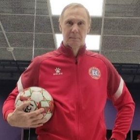

Ждем мальчиков и девочек на бесплатную пробную тренировку
Готов выйти на поле?
Запишись на бесплатную пробную тренировку уже сегодня!
Концепция детского футбольного клуба "Русь" в Москве
🎯 Цель - развитие и популяризация футбола путем построения новой стратегии развития детско-юношеского футбола как средства оздоровления населения, повышение значимости футбола в развитии личности.
✔️ Мы ставим перед собой задачу построить качественную, эффективную и рентабельную модель развития футбола в России, охватывающую все уровни – от массового футбола до профессионального.
Основной замысел нашей деятельности - предоставление детям качественную начальную футбольную подготовку в шаговой доступности (рядом с домом и/или местом учебы). Мы считаем, что спорт это один из важнейших элементов, оказывающих положительное влияние на формирование личности ребенка, поэтому занятия спортом в детском возрасте (до 5-14 лет) должны быть доступными, удобными, не мешать получать общее образование и приносить радость и положительные эмоции. При этом сами тренировки должны быть профессионально организованными, качественными и интересными, а способные дети должны иметь перспективы дальнейшего развития.
❗️ Все мы должны понимать, что без качественной профессиональной подготовки не будет больших результатов в профессиональном футболе! От массового футбола к футболу высшего спортивного мастерства!
Командный дух и дружба
Футбольный клуб «Русь» - это не только место для развития спортивных навыков, но и настоящая семья, где мы учимся быть не просто футболистами, но и настоящими друзьями.
Солидарность
Учимся поддерживать друг друга на поле и в жизни
Уважение
Ценим каждого игрока и его вклад в команду
Ответственность
Понимаем важность командных решений
Достижения
Вместе радуемся победам и учимся на ошибках
В футбольном клубе «Русь» каждый ребенок чувствует себя важным и ценным членом команды. Мы уделяем особое внимание развитию коллективного сознания и пониманию того, что только совместными усилиями можно достичь больших успехов.
Футбол: Полезное занятие для развития ребенка
Расскажем несколько причин, почему футбол полезен для детей:
Главный тренер

Андрей Алексаненков
Воспитанник футбольного клуба "Динамо" (Москва), тренировался у Г. Б. Кузнецова. Играл на позиции защитника. Спортивное звание: мастер спорта СССР с 1990 года. Опыт работы с детскими и юношескими командами более 15 лет.
Достижения тренера:
- Мастер спорта СССР по футболу
- Тренер высшей категории
- Автор методик подготовки юных футболистов
- Провел более 50 футбольных сборов
- Специалист по технике и тактике игры
- Работал с командами юношеских лиг
Адреса детский ФК Русь
Как добраться
Как добраться
Детский футбольный клуб "Русь" ждет вас и вашего ребенка в свою спортивную семью!
Записаться